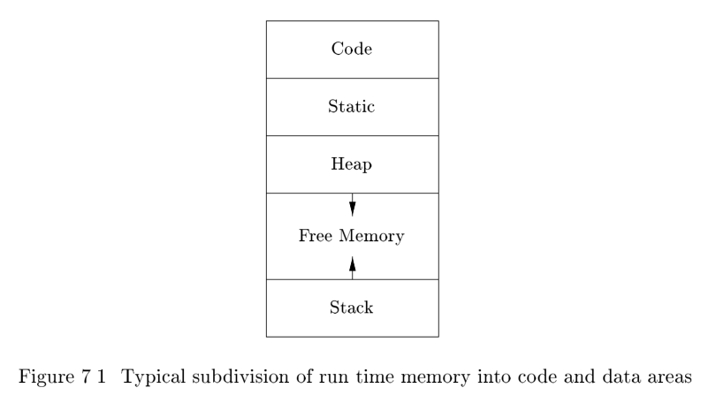

7.1 Storage Organization#
From the perspective of the compiler writer, the executing target program runs in its own logical address space in which each program value has a location. The management and organization of this logical address space is shared between the compiler, operating system, and target machine. The operating system maps the logical addresses into physical addresses, which are usually spread throughout memory.
The run-time representation of an object program in the logical address space consists of data and program areas as shown in Fig. 7.1. A compiler for a language like C++ on an operating system like Linux might sub divide memory in this way.

Throughout this book, we assume the run-time storage comes in blocks of contiguous bytes, where a byte is the smallest unit of addressable memory(字节是内存的最小编址单元). A byte is eight bits and four bytes form a machine word. Multibyte objects are stored in consecutive bytes and given the address of the first byte(多字节数据对象总数存储在一段连续的字节中，并且将第一个字节作为地址).
As discussed in Chapter 6, the amount of storage needed for a name is determined from its type. An elementary data type, such as a character, integer,or float, can be stored in an integral number of bytes. Storage for an aggregate type, such as an array or structure, must be large enough to hold all its components.
The storage layout for data objects is strongly influenced by the addressing constraints of the target machine. On many machines, instructions to add integers may expect integers to be aligned, that is, placed at an address divisible by 4. Although a character array (as in C) of length 10 needs only enough bytes to hold ten characters, a compiler may allocate 12 bytes to get the proper alignment, leaving 2 bytes unused. Space left unused due to alignment considerations is referred to as padding. When space is at a premium, a compiler may pack data so that no padding is left; additional instructions may then need to be executed at run time to position packed data so that it can be operated on as if it were properly aligned.
The size of the generated target code is fixed at compile time, so the compiler can place the executable target code in a statically determined area Code,usually in the low end of memory. Similarly, the size of some program data objects, such as global constants, and data generated by the compiler, such as information to support garbage collection, may be known at compile time, and these data objects can be placed in another statically determined area called Static. One reason for statically allocating as many data objects as possible is that the addresses of these objects can be compiled into the target code. In early versions of Fortran, all data objects could be allocated statically.
To maximize the utilization of space at run time, the other two areas, Stack and Heap, are at the opposite ends of the remainder of the address space. These areas are dynamic; their size can change as the program executes. These areas grow towards each other as needed. The stack is used to store data structures called activation records that get generated during procedure calls.
In practice, the stack grows towards lower addresses, the heap towards higher. However, throughout this chapter and the next we shall assume that the stack grows towards higher addresses so that we can use positive offsets for notational convenience in all our examples.
As we shall see in the next section, an activation record is used to store information about the status of the machine, such as the value of the program counter and machine registers, when a procedure call occurs. When control returns from the call, the activation of the calling procedure can be restarted after restoring the values of relevant registers and setting the program counter to the point immediately after the call. Data objects whose lifetimes are contained in that of an activation can be allocated on the stack along with other information associated with the activation.
Many programming languages allow the programmer to allocate and deallocate data under program control. For example, C has the functions malloc and freethat can be used to obtain and give back arbitrary chunks of storage. The heap is used to manage this kind of long-lived data. Section 7.4 will
discuss various memory-management algorithms that can be used to maintain the heap
7.1.1 Static Versus Dynamic Storage Allocation#
The layout and allocation of data to memory locations in the run-time environment are key issues in storage management. These issues are tricky because the same name in a program text can refer to multiple locations at run time. The two adjectives static and dynamic distinguish between compile time and run time, respectively. We say that a storage-allocation decision is static, if it can be made by the compiler looking only at the text of the program, not at what the program does when it executes. Conversely, a decision is dynamic if it can be decided only while the program is running. Many compilers use some combination of the following two strategies for dynamic storage allocation:
- Stack storage. Names local to a procedure are allocated space on a stack.We discuss the run-time stack starting in Section 7.2. The stack supports the normal call/return policy for procedures
- Heap storage. Data that may outlive the call to the procedure that created it is usually allocated on a heap of reusable storage. We discuss heap management starting in Section 7.4. The heap is an area of virtual memory that allows objects or other data elements to obtain storage when they are created and to return that storage when they are invalidated
To support heap management, garbage collection enables the run-time system to detect useless data elements and reuse their storage, even if the programmer does not return their space explicitly. Automatic garbage collection is an essential feature of many modern languages, despite it being a difficult operation to do efficiently; it may not even be possible for some languages